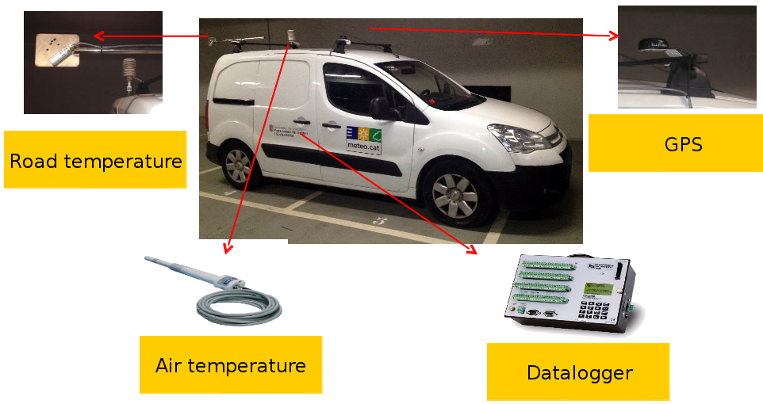
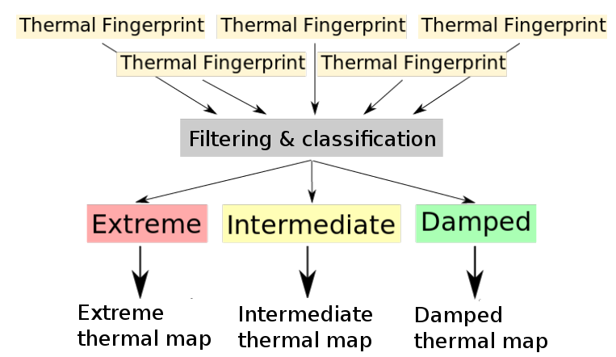

Viamet: Advanced integration of meteorological data to achieve high resolution winter road condition forecasts
Roger Veciana i Rovira
Servei Meteorològic de Catalunya
The challenge
Road status forecasting along 500km of mountain roads
Better Snowplow routes & efficiency
Reduction in the use of salt
Road security improvement
Objective justification for the taken actions
The region: El Berguedà
Highlands and flat zones
The region: El Berguedà
Reservoires generating high moisture points (icy roads)
The region: El Berguedà
Frequent thermal inversions
High variety of roads
Trunk roads at the main valley
Small roads connecting mountain towns
Two road operators
Usual solution
METRo model
Energy balance
Road conductivity
Presence of precipitation
METRo model inputs
As many RWIS stations as points to forecast
Complex terrain means lots of points
Data assimilation
Budget problem
Our solution: 4 RWIS + "Virtual stations"
Calculating the RWIS variables from available data
Air temperature and dew point: Station data interpolation with residues
Presence of precipitation using the weather radar data
Wind taken from the CALMET downscaling model
Radiation calculated from the model corrected depending on the surrounding obstacles
Road temperature and condition from the actual RWIS + thermal mapping
Enough data to calculate as many points as necessary
Thermal mapping equipment

Thermal mapping creation

Based on the Pasquill-Guifford index
Changes depending on the situation
Technologies used
Generating the data: Python
Database: PostgreSQL with PostGIS
Web server: NodeJS
Web page: AngularJS
Mapping: OpenLayers 3
The actual page
←
→
/
Go to slide:
#